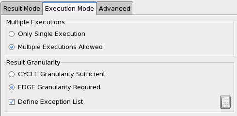
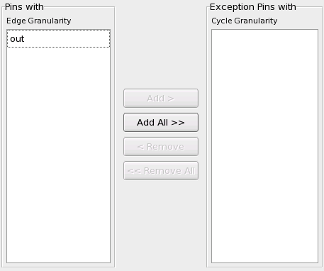

Execution Mode
This tab relates to gathering information on the edge level:

Multiple Executions
Define whether multiple executions are allowed at all.
Result Granularity
The radio buttons of the Result Granularity control conditions for gathering edge information.
By selecting Edge Granularity Required you define the following settings:
- You activate gathering of two bit codes for all 8 edges by repetition of the test if two bit
codes and one result per cycle are requested in the Result Mode tab, and
the test fails.
By default, all O and I/O pins are activated for gathering edge information in this way. But you can still exclude a subset of the IO or O pins from this option by defining an exception list (see figure below). This will be necessary if the test contains a matchloop. For more information on repeating a failing test in order to get information on the edge level see Retrieving edge information by repeating the test.
The following figure shows the window where you can exclude IO and O pins from edge granularity:

- You require the sub-cycle definitions of DCRM to satisfy the conditions
for edge retrieval (see Possible combinations of CYRM, CYRP, and DCRM).
If these conditions are not satisfied, FTST? will quit with an error message.
Functional changes
- Introduced in SmarTest 7.1.2